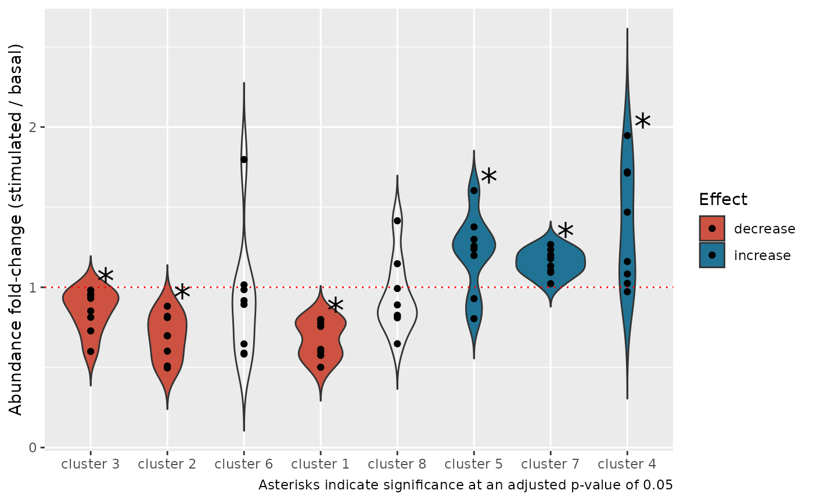
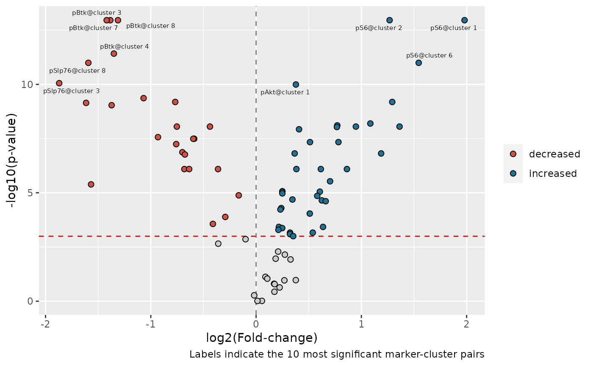

Differential discovery analysis
Timothy Keyes
2022-06-03
differential-discovery-analysis.RmdAfter clusters are identified, many CyTOF users want to use statistical tools to rigorously quantify which clusters(s) in their dataset associate with a particular experimental or clinical variable.
Such analyses are often grouped under the umbrella term differential discovery analysis and include both comparing the relative size of clusters between experimental conditions (differential abundance analysis; DAA) as well as comparing marker expression patterns of clusters between experimental conditions (differential expression analysis; DEA). tidytof provides the tof_daa() and tof_dea() verbs for differential abundance and differential expression analyses, respectively.
Accessing the data for this vignette
To demonstrate how to use these verbs, we’ll first download a dataset originally collected for the development of the CITRUS algorithm. These data are available in the HDCytoData package, which is available on Bioconductor and can be downloaded with the following command:
if (!requireNamespace("BiocManager", quietly = TRUE)) {
install.packages("BiocManager")
}
BiocManager::install("HDCytoData")To load the CITRUS data into our current R session, we can call a function from the HDCytoData, which will provide it to us in a format from the {flowCore} package (called a “flowSet”). To convert this into a tidy tibble, we can use tidytof built-in method for converting flowCore objects into tof_tbl’s .
citrus_raw <- HDCytoData::Bodenmiller_BCR_XL_flowSet()
citrus_data <-
citrus_raw %>%
as_tof_tbl(sep = "_")Thus, we can see that citrus_data is a tof_tbl with 172791 cells (one in each row) and 39 pieces of information about each cell (one in each column).
We can also extract some metadata from the raw data and join it with our single-cell data using some functions from the tidyverse:
citrus_metadata <-
tibble(
file_name = as.character(flowCore::pData(citrus_raw)[[1]]),
sample_id = 1:length(file_name),
patient = stringr::str_extract(file_name, "patient[:digit:]"),
stimulation = stringr::str_extract(file_name, "(BCR-XL)|Reference")
) %>%
mutate(
stimulation = if_else(stimulation == "Reference", "Basal", stimulation)
)
citrus_metadata %>%
head()
#> # A tibble: 6 × 4
#> file_name sample_id patient stimulation
#> <chr> <int> <chr> <chr>
#> 1 PBMC8_30min_patient1_BCR-XL.fcs 1 patient1 BCR-XL
#> 2 PBMC8_30min_patient1_Reference.fcs 2 patient1 Basal
#> 3 PBMC8_30min_patient2_BCR-XL.fcs 3 patient2 BCR-XL
#> 4 PBMC8_30min_patient2_Reference.fcs 4 patient2 Basal
#> 5 PBMC8_30min_patient3_BCR-XL.fcs 5 patient3 BCR-XL
#> 6 PBMC8_30min_patient3_Reference.fcs 6 patient3 BasalThus, we now have sample-level information about which patient each sample was collected from and which stimulation condition (“Basal” or “BCR-XL”) each sample was exposed to before data acquisition.
Finally, we can join this metadata with our single-cell tof_tbl to obtain the cleaned dataset.
After these data cleaning steps, we now have citrus_data, a tof_tbl containing cells collected from 8 patients. Specifically, 2 samples were taken from each patient: one in which the cells’ B-cell receptors were stimulated (BCR-XL) and one in which they were not (Basal). In citrus_data, each cell’s patient of origin is stored in the patient column, and each cell’s stimulation condition is stored in the stimulation column. In addition, the population_id column stores information about cluster labels that were applied to each cell using a combination of FlowSOM clustering and manual merging (for details, run ?HDCytoData::Bodenmiller_BCR_XL in the R console).
Differential abundance analysis using tof_daa()
We might wonder if there are certain clusters that expand or deplete within patients between the two stimulation conditions described above - this is a question that requires differential abundance analysis (DAA). tidytof’s tof_daa() verb supports the use of 3 statistical approaches for performing DAA: diffcyt, generalized-linear mixed modeling (GLMMs), and simple t-tests. Because the setup described above uses a paired design and only has 2 experimental conditions of interest (Basal vs. BCR-XL), we can use the paired t-test method:
daa_result <-
citrus_data %>%
tof_daa(
cluster_col = population_id,
effect_col = stimulation,
group_cols = patient,
test_type = "paired",
method = "ttest"
)
daa_result
#> # A tibble: 8 × 8
#> population_id p_val p_adj significant t df mean_diff mean_fc
#> <chr> <dbl> <dbl> <chr> <dbl> <dbl> <dbl> <dbl>
#> 1 1 0.000924 0.00535 "*" -5.48 7 -0.00743 0.644
#> 2 2 0.00623 0.0166 "*" -3.86 7 -0.0156 0.674
#> 3 3 0.0235 0.0314 "*" -2.88 7 -0.0638 0.849
#> 4 4 0.0235 0.0314 "*" 2.88 7 0.0832 1.38
#> 5 5 0.0116 0.0232 "*" 3.39 7 0.00246 1.08
#> 6 6 0.371 0.371 "" -0.955 7 -0.0168 0.919
#> 7 7 0.00134 0.00535 "*" 5.14 7 0.0202 1.14
#> 8 8 0.236 0.270 "" -1.30 7 -0.00228 0.901Based on this output, we can see that 6 of our 8 clusters have statistically different abundance in our two stimulation conditions. Using tidytof easy integration with tidyverse packages, we can use this result to visualize the fold-changes of each cluster (within each patient) in the BCR-XL condition compared to the Basal condition using ggplot2:
plot_data <-
citrus_data %>%
mutate(population_id = as.character(population_id)) %>%
left_join(
select(daa_result, population_id, significant, mean_fc),
by = "population_id"
) %>%
dplyr::count(patient, stimulation, population_id, significant, mean_fc, name = "n") %>%
group_by(patient, stimulation) %>%
mutate(prop = n / sum(n)) %>%
ungroup() %>%
pivot_wider(
names_from = stimulation,
values_from = c(prop, n),
) %>%
mutate(
diff = `prop_BCR-XL` - prop_Basal,
fc = `prop_BCR-XL` / prop_Basal,
population_id = fct_reorder(population_id, diff),
direction =
case_when(
mean_fc > 1 & significant == "*" ~ "increase",
mean_fc < 1 & significant == "*" ~ "decrease",
TRUE ~ NA_character_
)
)
significance_data <-
plot_data %>%
group_by(population_id, significant, direction) %>%
summarize(diff = max(diff), fc = max(fc)) %>%
ungroup()
plot_data %>%
ggplot(aes(x = population_id, y = fc, fill = direction)) +
geom_violin(trim = FALSE) +
geom_hline(yintercept = 1, color = "red", linetype = "dotted", size = 0.5) +
geom_point() +
geom_text(
aes(x = population_id, y = fc, label = significant),
data = significance_data,
size = 8,
nudge_x = 0.2,
nudge_y = 0.06
) +
scale_x_discrete(labels = function(x) str_c("cluster ", x)) +
scale_fill_manual(
values = c("decrease" = "#cd5241", "increase" = "#207394"),
na.translate = FALSE
) +
labs(
x = NULL,
y = "Abundance fold-change (stimulated / basal)",
fill = "Effect",
caption = "Asterisks indicate significance at an adjusted p-value of 0.05"
)
Importantly, the output of tof_daa depends slightly on the underlying statistical method being used, and details can be found in the documentation for each tof_daa_* function family member:
tof_daa_diffcyttof_daa_glmmtof_daa_ttest
Differential expression analysis with tof_dea()
Similarly, suppose we’re interested in how intracellular signaling proteins change their expression levels between our two stimulation conditions in each of our clusters. This is a Differential Expression Analysis (DEA) and can be performed using tidytof’s tof_dea verb. As above, we can use paired t-tests with multiple-hypothesis correction to to test for significant differences in each cluster’s expression of our signaling markers between stimulation conditions.
signaling_markers <-
c(
"pNFkB_Nd142", "pStat5_Nd150", "pAkt_Sm152", "pStat1_Eu153", "pStat3_Gd158",
"pSlp76_Dy164", "pBtk_Er166", "pErk_Er168", "pS6_Yb172", "pZap70_Gd156"
)
dea_result <-
citrus_data %>%
tof_preprocess(channel_cols = any_of(signaling_markers)) %>%
tof_dea(
method = "ttest",
cluster_col = population_id,
marker_cols = any_of(signaling_markers),
effect_col = stimulation,
group_cols = patient,
test_type = "paired"
)
dea_result %>%
head()
#> # A tibble: 6 × 9
#> population_id marker p_val p_adj significant t df mean_diff mean_fc
#> <chr> <chr> <dbl> <dbl> <chr> <dbl> <dbl> <dbl> <dbl>
#> 1 1 pS6_Y… 7.58e-8 2.12e-6 * 22.9 7 2.56 4.31
#> 2 2 pS6_Y… 1.16e-7 2.12e-6 * 21.6 7 2.13 2.49
#> 3 3 pBtk_… 1.32e-7 2.12e-6 * -21.2 7 -0.475 0.289
#> 4 7 pBtk_… 1.18e-7 2.12e-6 * -21.5 7 -0.518 0.286
#> 5 8 pBtk_… 1.30e-7 2.12e-6 * -21.2 7 -0.516 0.324
#> 6 4 pBtk_… 7.85e-7 1.05e-5 * -16.3 7 -0.462 0.296While the output of tof_dea() also depends on the underlying test being used, we can see that the result above looks relatively similar to the output from tof_daa(). Above, the output is a tibble in which each row represents the differential expression results from a single cluster-marker pair - for example, the first row represents the difference in expression of pS6 in cluster 1 between the BCR-XL and Basal conditions. Each row includes the raw p-value and multiple-hypothesis-corrected p-value for each cluster-marker pair.
This result can be used to make a volcano plot to visualize the results for all cluster-marker pairs:
volcano_data <-
dea_result %>%
mutate(
log2_fc = log(mean_fc, base = 2),
log_p = -log(p_adj),
significance =
case_when(
p_adj < 0.05 & mean_fc > 1 ~ "increased",
p_adj < 0.05 & mean_fc < 1 ~ "decreased",
TRUE ~ NA_character_
),
marker =
str_extract(marker, ".+_") %>%
str_remove("_"),
pair = str_c(marker, str_c("cluster ", population_id), sep = "@")
)
volcano_data %>%
ggplot(aes(x = log2_fc, y = log_p, fill = significance)) +
geom_vline(xintercept = 0, linetype = "dashed", color = "gray50") +
geom_hline(yintercept = -log(0.05), linetype = "dashed", color = "red") +
geom_point(shape = 21, size = 2) +
ggrepel::geom_text_repel(
aes(label = pair),
data = slice_head(volcano_data, n = 10L),
size = 2
) +
scale_fill_manual(
values = c("decreased" = "#cd5241", "increased" = "#207394"),
na.value = "#cdcdcd"
) +
labs(
x = "log2(Fold-change)",
y = "-log10(p-value)",
fill = NULL,
caption = "Labels indicate the 10 most significant marker-cluster pairs"
)
As above, details can be found in the documentation for each tof_dea_* function family member:
tof_dea_diffcyttof_dea_lmmtof_dea_ttest